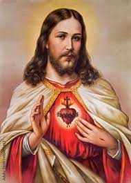

A karácsony az egyik legfontosabb keresztény ünnep amely Jézus születését ünnepli és ezért egyben a szeretet ünnepe is. Karácsonykor karácsonyfát állítunk, együtt ünneplünk a családdal, és ajándékokat adunk egymásnak.
A Télapó legendája évszázadok óta él a világ számos országában, és különböző kultúrákban más és más formában jelenik meg. Az egyik legismertebb változat szerint a Télapó története Szent Miklós püspökhöz, egy 4. századi keresztény vallású püspökhöz vezethető vissza, aki a kis-ázsiai Myra városában élt. Miklós püspök jótékony tetteiről volt híres, különösen arról, hogy titokban ajándékokat osztott a szegényeknek, és segített a rászoruló gyermekeknek. A legenda szerint egyszer három lány szülei annyira szegények voltak, hogy nem tudtak hozományt adni a lányaiknak, így azok nem mehettek férjhez. Miklós püspök, hogy segítse őket, éjjel titokban pénzt dobott az ablakukba, ezzel biztosítva számukra a hozományt. Az ajándékozás szeretete és a jótékonyság képviselete azóta is a Télapó történetének alapja.
A karácsony ünneplése a világ számos kultúrájában jelen van, de a hagyományok és szokások jelentősen eltérhetnek egymástól. Magyarországon a karácsony elsősorban a családról és a meghitt, békés együttlétről szól. Az ünnepi időszak advent első vasárnapjával kezdődik, amikor a családok meggyújtják az adventi koszorú első gyertyáját, és ezzel megkezdődik a várakozás Jézus születésének ünnepére. December 24-e, azaz Szenteste, a magyar karácsony legfontosabb napja. Ezen az estén a családok feldíszítik a karácsonyfát, gyakran közösen éneklik a "Mennyből az angyal" című dalt, majd megajándékozzák egymást. Az ajándékokat a magyar hagyomány szerint nem a Télapó, hanem Jézuska hozza.
Más kultúrákban a karácsony eltérő hagyományokkal és szokásokkal zajlik. Példáúl az angolszász országokban például december 25-én ünneplik a karácsonyt, és a Télapó, vagyis Santa Claus hozza az ajándékokat, amelyeket karácsony reggelén bontanak ki. A gyerekek karácsony előtti estén zoknikat akasztanak ki, amelyekbe kisebb ajándékok kerülnek. Az ünnepi asztalnál gyakran pulyka vagy más különleges fogás kerül felszolgálásra.
Mi kicsit máshogy ünnepeljük a karácsonyt mint mások, de szerintem mindenkinél vannak úgynevezett családi szokások. Példáúl mi már 1 héttel előre felállítjuk a karácsonyfát hiszen a szentestét mindig a nagymamámnál ünnepeljük aki Egerben él, hiszen nagyon magányos lenne egyedül. Miután voltunk Egerben átmegyünk a másik nagymamámhoz akik már a közelben él, csak egy pár kilométerre. Ott a szokásos karácsonyi ételek mellet tortát is eszünk, de ott kevesebett maradunk hiszen ott összejön a "nagycsalád".